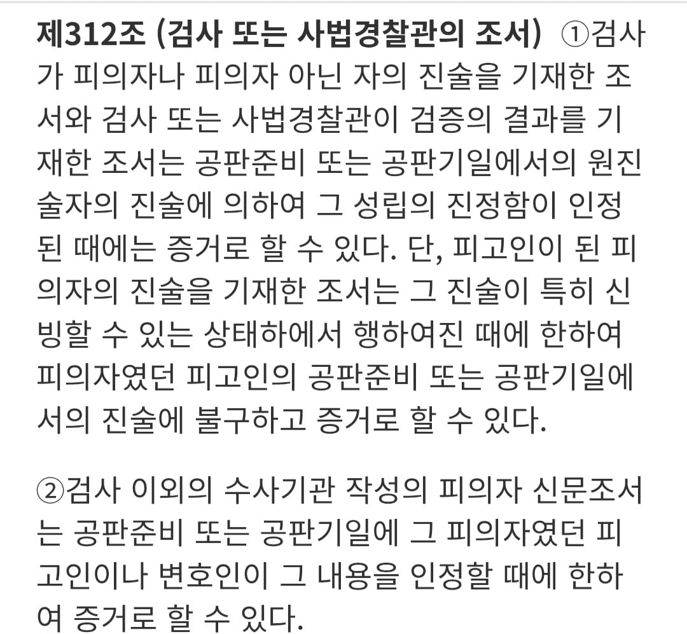
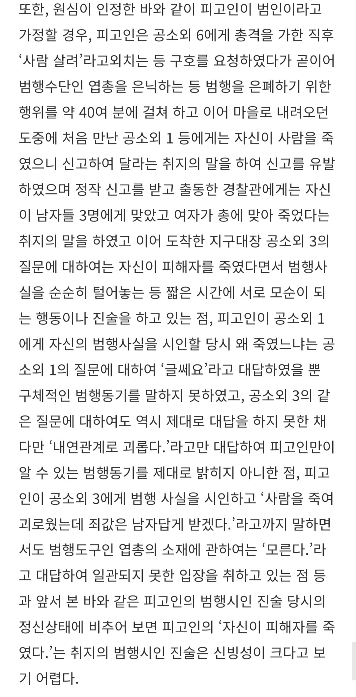
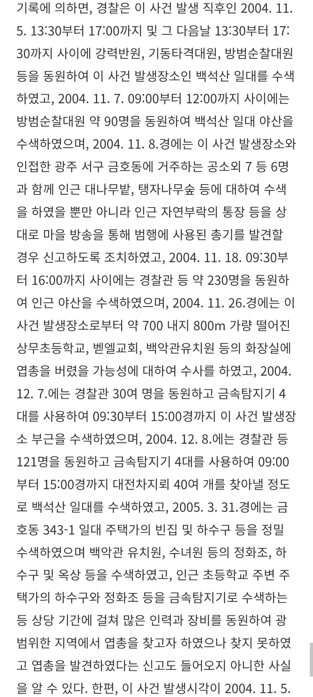
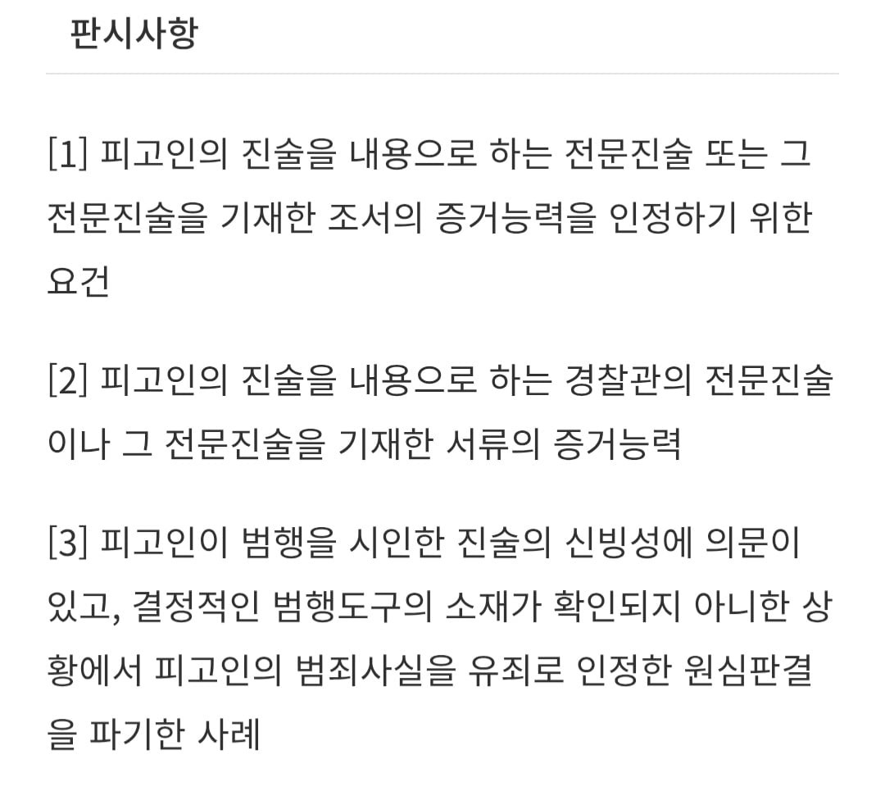

개드립에 올라온 사건:
https://www.dogdrip.net/728552997
대략 내연관계인 남녀 중 남자가 여자를 살해했다고 자백했다가 후에 번복한 사건인데

일단 형소법 312조 제 2항에 따라 현재 피고인이 범행을 부인하고 있는 한 피고인이 자백했다는 서류는 증거능력이 없음

사건 당시 자백 자체의 신빙성도 지적되었는데 피고인은 술을 2병 마신 상태로 바지에 대소변을 지린 상태였는데
자백이 모두 맞다고 가정하면
처음엔 사람살려라며 구조요청을하고
그 다음엔 엽총을 은닉하기 위해 수십분을 쓰고
그리고 마을에 내려오던 도중에 마주친 목격자에겐 사람을 죽였다 하고
이후 도착한 경찰관에겐 본인은 남자들 3명에게 맞고 여자는 총에 맞았다 증언하고
경찰서에 도착해선 본인이 피해자를 죽였다고 말하는 등
횡설수설하는 모습을 보였음

더하여 당시 경찰관 수백명을 동원해 물증인 엽총을 찾기 위해 산을 수색했고 인근 초등학교, 교회 등도 샅샅이 조사했음에도 나온게 없었음. 만취상태인 피고인이 40분간 이동할 수 있는 거리에 제한이 있고 숲속 덤블이나 잡목 등에 긁히지도 않은 깨끗한 상태였다는 걸 감안하면 실제로 엽총을 숨겼는지에 대해서 의문이 든다 밝힘.

그래서 무죄취지로 파기환송됨
전문법칙 조문 딸랑 올리고 설명하면 일반인인 개붕이들이 아 코렇구나 하고 추천 주겠냐?